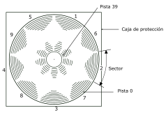

Capítulo 1. Curso de introducción
Parte 7: Grábelo en disco
Contenido:
- Inicialización de discos.
- Primeros pasos en la utilización de los discos maestros de CP/M.
- Inicialización en un sistema de 2 unidades de disco.
- Grabación de un programa en disco.
- Catálogo.
- Carga del disco a la memoria del ordenador.
- |A y |B.
- Copia de programas de disco a disco.
- Ficheros ASCII.
- Ficheros protegidos.
- Ficheros binarios.
- Volcado de pantalla.
Ahora que ha ejercitado su habilidad como mecanógrafo escribiendo unas cuantas instrucciones, seguramente querrá saber cómo grabar en disco un programa almacenado en la memoria del ordenador, para luego cargarlo del disco al ordenador.
Aunque usted tenga experiencia en la grabación y carga de programas en cinta, hay algunas peculiaridades del sistema de grabación en disco que es necesario tener en cuenta.
Hay dos diferencias fundamentales entre los discos y las cintas. La primera es que, a diferencia de lo que ocurre con la cintas, para grabar en un disco no basta con sacarlo de la caja e introducirlo en la unidad. Los discos nuevos tienen que ser "formateados" o "inicializados"; enseguida veremos cómo hacerlo.
La otra diferencia tiene que ver con los nombres que se puede dar a los ficheros. En el sistema de grabación en cinta, los nombres de los ficheros prácticamente no siguen ninguna regla, salvo la de la longitud; incluso se pueden grabar ficheros sin nombre. No ocurre así con el sistema de grabación en disco, en el que los nombres de los ficheros deben atenerse a las normas de CP/M, como veremos más adelante.
Inicialización de discos
Antes de poder escribir datos en un disco virgen es necesario inicializarlo o formatearlo. Esta operación consiste en preparar una especie de estantería en el disco; los estantes son los lugares en los que más tarde se va a almacenar la información.
Al inicializar un disco, éste queda dividido en 360 zonas:

Radialmente el disco se divide en 40 pistas circulares, desde la número 0, que es la más externa, hasta la 39. Cada pista se divide en 9 sectores.
Cada sector puede almacenar 512 bytes; por lo tanto, la capacidad total de cada cara del disco es de 180K.
Primeros pasos en la utilización de los discos maestros de CP/M
Antes de poder grabar programas en un disco virgen es necesario inicializarlo, y para ello se requiere la cara 1 de los discos maestros de CP/M (suministrados con el ordenador).
Encienda el equipo e inserte la cara 1 de los discos de CP/M en la unidad. Si su sistema dispone de dos unidades de disco, utilice la incorporada en el ordenador (unidad A). Escriba lo siguiente:
|cpm [RETURN]
(El símbolo | se obtiene de la tecla @ con [MAYS].)
Al cabo de unos segundos aparecerá en la pantalla el siguiente mensaje:
CP/M Plus Amstrad Consumer Electronics plc
Esto es un mensaje de saludo que indica que el ordenador está siendo controlado por sistema operativo CP/M.
Los caracteres A> constituyen un inductor, análogo al Ready de BASIC, que avisa al usuario de que el ordenador está a la espera de sus instrucciones.
Una vez cargado CP/M, ya no se pueden teclear instrucciones de BASIC, pues el ordenador no las entendería.
Por ejemplo, si escribimos
cls [RETURN]
el ordenador repite lo tecleado junto con un signo de interrogación:
CLS?
lo que indica que no ha entendido la instrucción.
Par dar un breve repaso a algunas órdenes de CP/M, escriba:
dir [RETURN]
En la pantalla aparece una lista del contenido del disco, incluidas algunas órdenes transitorias. Una de ellas es DISCKIT3. Escriba:
disckit3 [RETURN]
Al cabo de unos instantes verá aparecer en la pantalla el mensaje de presentación de DISCKIT3, seguido de:
One drive found
Esto confirma que estamos ejecutando el programa de ayuda DISC KIT y que el ordenador sólo ha detectado una unidad de disco (la incorporada en la máquina).
En cambio, si está conectada la segunda unidad de disco, el mensaje será:
Two drives found
En la parte inferior de la pantalla se puede ver el siguiente menú:

Es el menú principal del programa DISCKIT3. Los números recuadrados hacen referencia a las teclas de función del teclado numérico (marcadas con f0, f1, f4 y f7). Pulsando una de estas teclas se elige la opción deseada.
Obsérvese que la opción 0 de este menú hace que se abandone el programa DISCKIT3 y se vuelva al modo directo de consola de CP/M (inductor A>).
Como lo que queremos hacer ahora es inicializar un disco, pulse la tecla de función número 4 (f4).
|
PRECAUCIÓN |
El programa ofrece un nuevo menú con las diferentes opciones de formato:
Pulsando una de las teclas de función (f3, f6 o f9) se selecciona el formato deseado. Más adelante explicaremos las diferencias entre los diversos formatos. Por ahora, elija el formato de datos pulsando la tecla de función número 6 (f6).
Obsérvese que al pulsar la tecla . (que está debajo de f3, f6 y f9) se sale de la opción de inicialización y se vuelve al menú principal del programa DISCKIT3.
Después de pulsar la tecla de función número 6 (y suponiendo que no tenga conectada la segunda unidad de disco) podrá ver en la pantalla lo siguiente:

En este momento debe extraer el disco de CP/M e insertar el disco nuevo, con la cara que desee inicializar hacia arriba.
Pulse ahora la tecla Y (de yes, "sí"), lo que equivale a decirle al ordenador: "de acuerdo, inicializa el disco". El proceso de inicialización comienza con la pista 0 y termina con la 39; en cada momento, el número de la pista que está siendo inicializada aparece en el extremo superior izquierdo de la pantalla.
El sistema no permite inicializar un disco que tenga abierto el orificio de protección contra escritura. Si lo intenta, el ordenador emite el mensaje:
| Mensaje | Traducción |
|---|---|
| Disc write-protected | El disco está protegido contra escritura |
| Insert disc to format | Insertar disco a inicializar |
| R-etry or C-ancel | R-eintentar o C-ancelar |
Lo que se debe hacer en este caso es pulsar C para cancelar la operación, extraer el disco e insertar el disco que sí se quiere inicializar, con el orificio de protección obturado.
Es muy importante no cerrar los orificios de protección de los discos que contengan programas valiosos. NO CERRAR NUNCA los orificios de protección de los discos maestros de CP/M.
Cuando termina la inicialización, el ordenador le pide que extraiga el disco recién inicializado y que pulse cualquier tecla para continuar.
Una vez hecho esto, puede inicializar otro disco insertándolo en la unidad y pulsando de nuevo la tecla Y. Este proceso se puede repetir tantas veces como discos tenga que inicializar con este formato concreto.
Cuando no haya más discos que inicializar, pulse cualquier tecla (distinta de la Y) para volver al menú.
Más adelante explicaremos las opciones Copy y Verify. Por ahora nos basta con haber aprendido a inicializar discos con CP/M. Reinicialice la máquina con [CONTROL] [MAYS] [ESC].
Guarde siempre en lugar seguro los discos maestros de CP/M, que son, literalmente, la llave del sistema. En un capítulo posterior explicaremos cómo hacer 'copias de trabajo' de los discos de CP/M, de forma que pueda guardar los originales a salvo de toda posibilidad de accidente.
Inicialización en un sistema de 2 unidades de disco
Siga las instrucciones anteriores: pulse f4 en el menú principal de DISCKIT3 para elegir la opción Format (inicialización) y luego pulse la tecla f6 para elegir Data format (formato de datos).
El ordenador le muestra un tercer menú, en el que se puede elegir la unidad de disco que se desee utilizar:

Para no tener que extraer el disco de CP/M (cara 1) de la unidad A, se puede elegir, pulsando la tecla f5, la opción Format B:, Ponga en la unidad B el disco que desee inicializar.
Después de elegida esta opción, puede pulsar Y para permitir que continúe el proceso de inicialización, o bien cualquier otra tecla para volver al menú principal de DISCKIT3.
Si elige la opción Format A: (tecla f8), NO OLVIDE extraer de la unidad A el disco de CP/M. Inserte luego en ella el disco que desee inicializar.
NO SE EXPONGA NUNCA AL RIESGO DE BORRAR
LOS DISCOS MAESTROS DE CP/M
Ahora que ya tenemos uno o dos discos preparados, vamos a empezar a transferir pro gramas de BASIC del ordenador al disco y viceversa.
Grabación de un programa en disco
Cuando se tiene un programa en la memoria del ordenador, se lo puede grabar en disco mediante la orden
save "nombrefi" [RETURN]
Observe que es indispensable dar un nombre al programa.
El nombre de un fichero grabado en disco consta de dos partes (campos). La primera es obligatoria y puede contener hasta 8 caracteres. Se pueden utilizar letras o números, pero no espacios ni signos de puntuación. Este primer campo suele contener el nombre del programa.
El segundo campo es opcional. Puede contener hasta 3 caracteres que no sean ni espacios ni signos de puntuación. Los dos campos se separan por un punto (.).
Si el usuario no especifica el segundo campo, el sistema le asigna automáticamente un distintivo: .BAS para ficheros de BASIC o .BIN para ficheros binarios (en código de máquina).
Para practicar la grabación en disco, introduzca un programa corto en la memoria del ordenador, inserte en la unidad un disco inicializado y escriba lo siguiente:
save "ejemplo" [RETURN]
Al cabo de unos segundos aparecerá en la pantalla el mensaje Ready, lo que indica que el programa ha quedado grabado en el disco. (De no ser así, observe los mensajes emitidos por el ordenador, pues puede ocurrir que no haya insertado el disco en la unidad correcta, que esté abierto el orificio de protección o que se haya equivocado al teclear la orden.)
Catálogo
Una vez grabado el programa, escriba lo siguiente:
cat [RETURN)
En la pantalla podrá ver
Drive A: user 0
EJEMPLO.BAS 1K
168 K free
o sea, el nombre del fichero, incluido el segundo campo, seguido de la longitud aproximada en K. En la última línea se indica también el espacio que queda libre en el disco.
Carga del disco a la memoria del ordenador
Los programas se pueden cargar y ejecutar con las órdenes siguientes:
load "nombrefi" [RETURN]
run [RETURN]
Pero también se los puede ejecutar directamente con una sola orden:
run "nombreti" [RETURN]
Los programas protegidos sólo se pueden ejecutar por este segundo método.
|A y |B
Si tiene conectada la segunda unidad de disco, puede especificar en qué unidad desea que se realice cada función escribiendo
|a [RETURN]
o bien
|b [RETURN]
antes de las órdenes SAVE, CAT o LOAD.
Copia de programas de disco a disco
Para copiar programas de un disco a otro utilizando las órdenes que hemos aprendido en esta sección, basta con hacer lo siguiente: cargar el programa en memoria leyéndolo del disco original (fuente), sacar el disco, insertar el disco nuevo (destino) y grabar en él el programa.
En cambio, cuando se dispone de dos unidades de disco, es más cómodo insertar el disco fuente en una unidad, por ejemplo la B, y el disco destino en la A. Para copiar un programa se escribe entonces lo siguiente:
|b [RETURN]
load "nombrefi" [RETURN]
|a [RETURN]
save "nombrefi" [RETURN]
Hay cuatro formas de grabar programas con el CPC6128. Una de ellas es la ya conocida:
save "nombreti" [RETURN]
Las otras tres tienen aplicaciones más especializadas:
Ficheros ASCII
save "nombrefi",a [RETURN]
El sufijo ,a indica al ordenador que debe grabar el programa o los datos en forma de fichero de texto ASCII. Este método de grabación de datos es aplicable a los ficheros generados por procesadores de textos y otros programas; lo explicaremos más detenidamente cuando hablemos de esas aplicaciones.
Ficheros protegidos
save "nombrefi",p [RETURN]
El sufijo ,p indica al ordenador que el fichero debe ser protegido. Cuando un programa está así protegido, no es posible cargarlo (LOAD) para luego listarlo (LIST), ni tampoco interrumpirlo con la tecla [ESC] después de haber iniciado su ejecución con RUN.
Los programas grabados por este procedimiento sólo pueden ser ejecutados directamente, bien con la orden
run "nombrefi" [RETURN]
bien con
chain "nombrefi" [RETURN]
Siempre que se prevea la posibilidad de que más tarde se vaya a corregir o modificar un programa, se debe guardar una copia no protegida, esto es, grabada sin el sufijo ,p.
Ficheros binarios
save "nombrefi",b, <direccion inicial> , <longitud en bytes>
[, <punto de entrada, opcional> ] [RETURN]
Esta opción permite realizar un volcado directo de datos desde la memoria RAM del ordenador hacia el disco. Además del sufijo ,b, es necesario indicar al ordenador en qué dirección de memoria empieza el bloque que se desea transferir, cuál es la longitud en bytes y, en su caso, en qué dirección de memoria debe empezar la ejecución cuando se cargue el fichero como programa.
Volcado de pantalla
Este método de grabación de ficheros binarios permite hacer un volcado de la memoria dedicada a la pantalla. El contenido de la pantalla se graba mediante la siguiente orden:
save "volcpant", b, 49152,16384 [RETURN]
donde 49152 es la dirección en la que empieza la zona de memoria dedicada a la pantalla y 16384 es el tamaño de esa zona en bytes.
Para cargar nuevamente esos datos en el ordenador se escribe:
load "volcpant" [RETURN]
En un capítulo posterior de este manual daremos más información sobre la transferencia de datos de un disco a otro, de cinta a disco y de disco a cinta.
Finalmente, asegúrese de que ha tenido en cuenta las advertencias que hemos hecho al principio del manual, en la sección titulada IMPORTANTE:
- NOTAS DE INSTALACIÓN 5, 6 y 7.
- NOTAS DE OPERACIÓN 1, 2, 3, 4, 5, 6, 7 y 9.